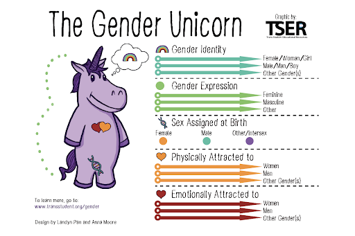

In relationships, consent is an agreement between participants engaging in physical or sexual activity. It is necessary to set boundaries prior to and while engaging in an activity in order to ensure the safety of your partner(s) and self.
LGBTQIA+ is an initilaism that stands for: Lesbian, Gay, Bisexual, Transgender, Queer/Questioning, Intersex, and Asexual/Ally.
Common labels
Meet the Gender Unicorn — a fun way to explore, understand, and explain the differences and interconnectedness of terms like gender identity, gender expression, sex assigned at birth, and sexual orientation:
Anxiety is the body’s response to stress. Normal anxiety is situational: when preparing for final exams, you may feel worry or restlessness. In certain individuals, this bodily response is persistent.Many experience anxiety in different ways; therefore, anxiety is categorized into types of disorders (source). Generalized anxiety disorder is defined as excessive, long-term worry that interferes with one’s day-to-day activities — including work, school and relationships.
Other types of anxiety disorders include:
Are you intrested in learning more about Anxiety? Then watch this video that is embeded below to learn more!!
Depression causes a persistent feeling of sadness and loss of interest in activities.
Description: ADHD is a neurological disorder characterized by two factors: inattention and hyperactivity/impulsivity.
Subtypes of ADHD: